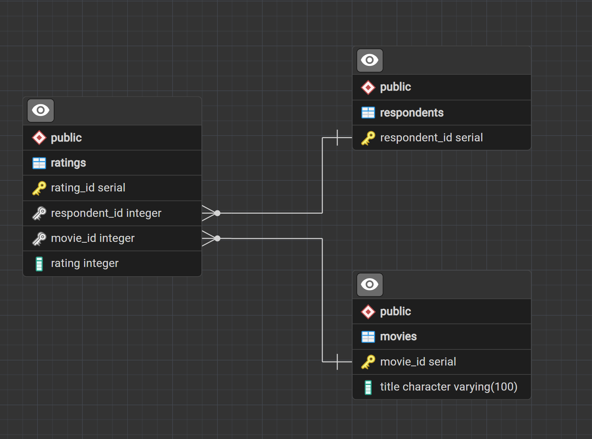
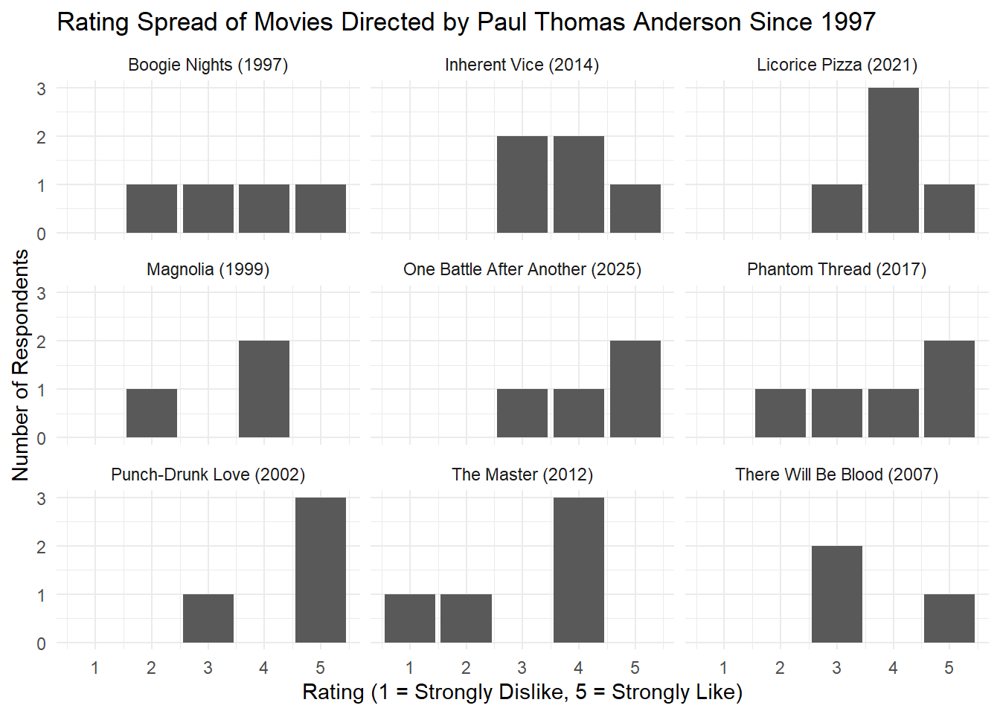
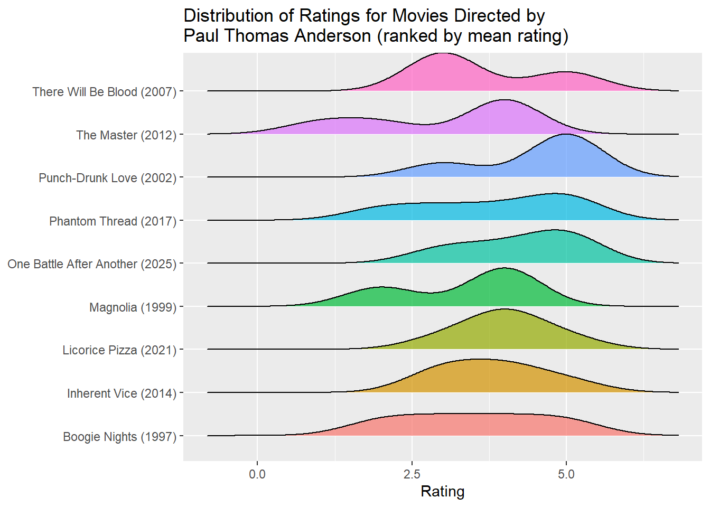

#library(DBI)
library(RPostgres)
#library(odbc)
#establish connection
con <- dbConnect(RPostgres::Postgres(),
dbname = 'Second_DB_DATA607',
host = 'localhost',
port = 5432,
user = Sys.getenv("DATA_607_DB_USER"),
password = Sys.getenv("DATA_607_DB_PW"))
# password = rstudioapi::askForPassword("DB pw"))
### old password verification methodAssignment2A-KCH-Approach
Introduction and Overview
This assignment involves data collection via a Movie Survey. The survey was distributed to a group of potential participants, with the goal of capturing movie preferences from at least five people. The scope of this specific Movie Survey was limited to films with the Director role as Paul Thomas Anderson. Nine of Anderson’s films were listed with a rating system of 1 (Strongly Dislike) to 5 (Strongly Like). The release year of each movie was included, and that data was sourced from the website ‘imdb.com’. Potential participants received the Movie Survey via email or URL link.
Once data collection has completed, the next step is to input the survey results into a SQL database. After inputting the data, analysis will be performed in R, utilizing SQL queries to retrieve the data from the local database.
Anticipated challenges in this assignment include the initial data collection phase and managing missing ratings in the survey. One strategy to increase the survey’s reach is to post the survey link in the DATA 607 slack channel or to share the URL with classmates during a meetup. Strategies to manage missing data include calculating the proportion of each rating for responses for each film. In other words, rather than relying on raw counts of ‘Strongly Dislike’ and other ratings, the percent of responses displaying ‘Strongly Dislike’ will be calculated, and the same process will be executed for other ratings. Another strategy could be to make “no response” its own category, and display that with the data in histograms. This would help to visualize the relative magnitude of ‘no response’ vs. ‘rated response’.
Possible enhancements to this assignment include secure database credential management, assessing the benefits of normalizing the database schema, and determining the advantage of standardizing ratings. Once findings of this study are determined and verified, recommendations for future improvements and analysis will be outlined.
Synthetic Data Generation
Due to a paucity of survey respondents, ratings data was synthesized. To create a mock data set, SQL code was written to initialize a PostgreSQL database. The code is replicated in the below code chunk. The code will not execute, but is here for demonstration purposes.
-- DATA 607 - Assignment 2A - SQL Database Input
-- ---------------------------------------------------------
-- Section 1. Schema
-- ---------------------------------------------------------
-- first, clear out existing tables before entering mock data
DROP TABLE IF EXISTS ratings;
DROP TABLE IF EXISTS movies;
DROP TABLE IF EXISTS respondents;
-- create respondent table with respondent_id as primary key
CREATE TABLE respondents (
respondent_id SERIAL PRIMARY KEY
);
-- create movies table with primary key of movie_id
CREATE TABLE movies (
movie_id SERIAL PRIMARY KEY,
title VARCHAR(100) NOT NULL
);
-- No rating row = that respondent hasn't seen/rated that movie.
-- create ratings table with rating_id as primary key
CREATE TABLE ratings (
rating_id SERIAL PRIMARY KEY,
respondent_id INT NOT NULL REFERENCES respondents(respondent_id),
movie_id INT NOT NULL REFERENCES movies(movie_id),
rating INT CHECK (rating BETWEEN 1 AND 5), -- only accept an integer between 1 and 5
UNIQUE (respondent_id, movie_id)
);
-- ---------------------------------------------------------
-- Section 2. Mock respondents
-- ---------------------------------------------------------
-- insert 7 users into respondent table
INSERT INTO respondents (respondent_id)
VALUES (DEFAULT), (DEFAULT), (DEFAULT), (DEFAULT), (DEFAULT), (DEFAULT), (DEFAULT);
-- ---------------------------------------------------------
-- Section 3. Movie Titles Insertion
-- ---------------------------------------------------------
-- insert 9 movies into movie table
INSERT INTO movies (title) VALUES
('One Battle After Another (2025)'),
('Licorice Pizza (2021)'),
('Phantom Thread (2017)'),
('Inherent Vice (2014)'),
('The Master (2012)'),
('There Will Be Blood (2007)'),
('Punch-Drunk Love (2002)'),
('Magnolia (1999)'),
('Boogie Nights (1997)');
-- data sourced from 'imdb.com'
-- ---------------------------------------------------------
-- Section 4. Mock ratings, deliberately incomplete
-- (not every respondent rated every movie)
-- ---------------------------------------------------------
-- insert mock respondent data (7 users and 9 movies)
INSERT INTO ratings (respondent_id, movie_id, rating) VALUES
-- respondent 1, movie 1, rating 5, etc.
(1, 1, 5), (1, 2, 4), (1, 3, 3), (1, 4, 5), (1, 5, 4), (1, 6, 3),(1, 7, 5), (1, 8, 4), (1, 9, 3),
-- respondent 2
(2, 1, 4), (2, 2, 5), (2, 3, 2), (2, 4, 3), (2, 5, 1), (2, 7, 5), (2, 8, 2), (2, 9, 4),
-- respondent 3
(3, 1, 3), (3, 3, 5), (3, 5, 4), (3, 7, 3), (3, 9, 5),
-- respondent 4
(4, 2, 4), (4, 4, 3), (4, 6, 5), (4, 8, 4),
-- respondent 5
(5, 1, 5), (5, 5, 2), (5, 3, 5), (5, 7, 5), (5, 9, 2),
-- respondent 6
(6, 3, 4), (6, 2, 4), (6, 4, 4), (6, 5, 4),
-- respondent 7
(7, 2, 3), (7, 4, 4), (7, 6, 3);Additional queries were written to practice pulling and summarizing data before import into R. Portions of this code were replicated below when actually pulling data from the database into R. Lastly, this code chunk will not execute.
-- DATA 607 - Assignment 2A - SQL Database Querying
-- ---------------------------------------------------------
-- 1. Select all data from ratings
-- ---------------------------------------------------------
select * from ratings;
-- ---------------------------------------------------------
-- 2. Output summary table listing how many movies each respondent rated
-- ---------------------------------------------------------
select respondent_id, count(*) as movies_rated
from ratings
group by respondent_id
order by respondent_id;Data Import into R
Importing data from the local database into R is guided by this support article from Posit: (https://support.posit.co/hc/en-us/articles/214510788-Setting-up-R-to-connect-to-SQL-Server). Additionally, the help files for RPostgres and the website for RPostgres (https://rpostgres.r-dbi.org/) provide important guidance for data import. Originally, database password verification was achieved via a method described by the Posit support document above, in which the user is prompted for a password via the dialog box at time of connection. However, this created issues when rendering the Quarto document to html, and therefore a new approach was needed. The old code has been commented out, and it remains as an artifact. Instead, a more secure method using environment variables replaces the original method (https://solutions.posit.co/connections/db/best-practices/managing-credentials/#use-environment-variables).
Now that the database connection has been established, the import can begin. A mapping of the PostgreSQL database schema is attached as reference, which was generated in pgAdmin 4.

The three tables in the database will be imported to data frames using simple SQL commands. This SQL code was replicated from above in the trial queries section.
library(tidyverse)
df_movies <- dbGetQuery(con, "select * from movies;")
df_respondents <- dbGetQuery(con, "select * from respondents;")
df_ratings <- dbGetQuery(con, "select * from ratings;")
##closing the DB conneciton after importing data
dbDisconnect(con)
## Confirming df_Ratings is of expected dimensions
glimpse(df_ratings)Rows: 38
Columns: 4
$ rating_id <int> 1, 2, 3, 4, 5, 6, 7, 8, 9, 10, 11, 12, 13, 14, 15, 16, 1…
$ respondent_id <int> 1, 1, 1, 1, 1, 1, 1, 1, 1, 2, 2, 2, 2, 2, 2, 2, 2, 3, 3,…
$ movie_id <int> 1, 2, 3, 4, 5, 6, 7, 8, 9, 1, 2, 3, 4, 5, 7, 8, 9, 1, 3,…
$ rating <int> 5, 4, 3, 5, 4, 3, 5, 4, 3, 4, 5, 2, 3, 1, 5, 2, 4, 3, 5,…Data Tidying
First, the dplyr package will be utilized to join existing data frames. The ‘ratings’ and ‘movies’ frames can be joined via the ‘movie_id’ key. Then the subsequent frame can be joined to ‘respondents’ via the ‘respondent_id’ key. The second join does not materially alter the initial frame, as ‘respondent_id’ is the only attribute in the ‘respondents’ frame. However, this step can be useful in verification: only allowing ratings with valid ‘respondent_id’ values pass through the join.
df <- left_join(df_ratings,
df_movies,
by = "movie_id")
df <- left_join(df,
df_respondents,
by = "respondent_id")
head(df) rating_id respondent_id movie_id rating title
1 1 1 1 5 One Battle After Another (2025)
2 2 1 2 4 Licorice Pizza (2021)
3 3 1 3 3 Phantom Thread (2017)
4 4 1 4 5 Inherent Vice (2014)
5 5 1 5 4 The Master (2012)
6 6 1 6 3 There Will Be Blood (2007)Handling Missing Data
Missing data in this movie survey can be input as NA values, and subsequent functions will omit those data from the calculations. First, a data structure containing all possible combinations of ‘respondent_id’ and ‘movie_id’ is generated using DPLYR’s ‘expand.grid’. This new frame will act as the scaffolding into which other data is input. Any ‘respondent_id’ - ‘movie_id’ combination that does not have matching rating data will be left as NA.
respondent_movie_combinations <- expand.grid(
respondent_id = df_respondents$respondent_id,
movie_id = df_movies$movie_id
)
df_2 <- respondent_movie_combinations |>
left_join(df_ratings,
by = c("respondent_id",
"movie_id")) |>
left_join(df_movies,
by="movie_id")
#NA values visible in rating id and rating column
head(df_2) respondent_id movie_id rating_id rating title
1 1 1 1 5 One Battle After Another (2025)
2 2 1 10 4 One Battle After Another (2025)
3 3 1 18 3 One Battle After Another (2025)
4 4 1 NA NA One Battle After Another (2025)
5 5 1 27 5 One Battle After Another (2025)
6 6 1 NA NA One Battle After Another (2025)Next, the magnitude of missing data is quickly calculated and displayed as output along with the number of existing records with complete ratings.
num_missing <- sum(is.na(df_2$rating_id))
num_entries <- sum(!is.na(df_2$rating_id))
msg <- paste("There are ", num_missing, " missing ratings in this data frame and", num_entries, " completed ratings in this data frame.")
msg[1] "There are 25 missing ratings in this data frame and 38 completed ratings in this data frame."Visualization and Analysis
The facet_wrap function in ggplot is utilized to generate plots of each movie’s ratings as a bar chart in an organized fashion.
ggplot(df_2, aes(x=rating))+
geom_bar() +
facet_wrap(~ title) +
labs(x="Rating (1 = Strongly Dislike, 5 = Strongly Like)",
y="Number of Respondents",
title = "Rating Spread of Movies Directed by Paul Thomas Anderson Since 1997") +
theme_minimal()
The mean rating for each movie is calculated without the missing data. Standard deviations are also calculated for each movie.
mean_1 mean_2 mean_3 mean_4 mean_5 mean_6 mean_7 mean_8 mean_9
1 4.25 4 3.8 3.8 3 3.666667 4.5 3.333333 3.5Chapter 4 of ‘R for Data Science’ (https://r4ds.hadley.nz/workflow-style.html#sec-pipes) contains example code that uses a piping of filter then group_by then summarize to deliver mean arrival times in the ‘nycflights’ data. A similar approach was replicated below to compute a summary more elegantly.
df_2 |>
filter(rating > 0) |> #remove null values
group_by(title) |> #create grouping for the summarize to act on
summarize (mean_rating = mean(rating, na.rm=TRUE), #calc mean BY title
SD_rating = stats::sd(rating, na.rm=TRUE))|> #calc SD by title
arrange(desc(mean_rating)) #sort so highest rated at top# A tibble: 9 × 3
title mean_rating SD_rating
<chr> <dbl> <dbl>
1 Punch-Drunk Love (2002) 4.5 1
2 One Battle After Another (2025) 4.25 0.957
3 Licorice Pizza (2021) 4 0.707
4 Inherent Vice (2014) 3.8 0.837
5 Phantom Thread (2017) 3.8 1.30
6 There Will Be Blood (2007) 3.67 1.15
7 Boogie Nights (1997) 3.5 1.29
8 Magnolia (1999) 3.33 1.15
9 The Master (2012) 3 1.41 The distribution of ratings data is plotted in a ridge plot. Certain difficulties were encountered in the process of generating the figure. First, the legend needed to be removed, as it created visual noise without assisting in distinguishing the plotted series. Removal of the legend was accomplished by setting the ‘show.legend’ boolean to false. Inspiration for this technique was found here: https://ggplot2-book.org/maps.html#sec-polygonmaps. Plotting the data as a ridgeline was inspired from a previous project and this resource: https://wilkelab.org/ggridges/articles/introduction.html.
library(ggridges)Warning: package 'ggridges' was built under R version 4.5.3df_2 |>
filter(rating>0) |> #remove nulls
arrange(movie_id) |>
ggplot(aes(x=rating,
y=title,
fill=title)) +
geom_density_ridges(scale = 2,
alpha=0.7, show.legend = FALSE) +
labs(title="Distribution of Ratings for Movies \nDirected by Paul Thomas Anderson",
x = "Rating",
y = "Title") +
ylab(NULL)Picking joint bandwidth of 0.606
Findings and Recommendations
The initial survey mechanism for collecting data was unsuccessful, and an alternative method of synthetic data generation was employed. Rating data were generated for 7 mock respondents across 9 films using hard-coded values to retain reproducibility. An approach using quasi-random data generation was considered, but it was not pursued due to resource constraints.
Additional findings include the mean rating and standard deviation of rating for each movie in the data set. The movie with the highest measured average rating was ‘Punch-Drunk Love’, with a mean of 4.5, while the movie with the lowest measured average rating was ‘The Master’, with a mean of 3.0. These high average ratings indicate a high overall affinity among mock respondents for these films.
Lastly, certain procedural refinements were made along the way: storing credentials as environment variables, using a piped process to calculate mean ratings, and designing an effective database schema. Each of these practices can be integrated into a standard protocol for similar technical undertakings.
While the movie release year was not an integral piece of information, one recommendation for future work could be to store this data in its own column, allowing for the arrangement of the movies in ascending or descending order by release year. Additionally, one future enhancement for data collection could be to create a connection between the database and the user inputs. This would remove the need for manual data input, which can lead to error. Lastly, standardizing the movie rating data by respondent before aggregating it by film could eliminate or account for certain respondent biases.